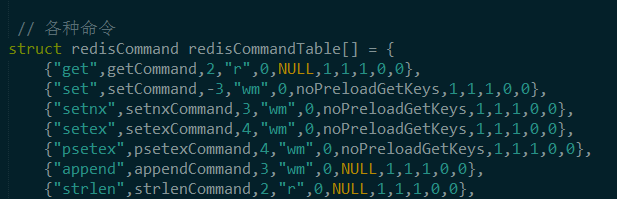

新连接的到来
在 initServer() 的讲解中，redis 注册了回调函数 acceptTcpHandler()，当有新的连接到来时，这个函数会被回调，上面的函数指针 rfileProc() 实际上就是指向了 acceptTcpHandler()。下面是 acceptTcpHandler() 的核心代码：
// 用于 TCP 接收请求的处理函数
void acceptTcpHandler(aeEventLoop *el, int fd, void *privdata, int mask) {
int cport, cfd;
char cip[REDIS_IP_STR_LEN];
REDIS_NOTUSED(el);
REDIS_NOTUSED(mask);
REDIS_NOTUSED(privdata);
// 接收客户端请求
cfd = anetTcpAccept(server.neterr, fd, cip, sizeof(cip), &cport);
// 出错
if (cfd == AE_ERR) {
redisLog(REDIS_WARNING,"Accepting client connection: %s", server.neterr);
return;
}
// 记录
redisLog(REDIS_VERBOSE,"Accepted %s:%d", cip, cport);
// 真正有意思的地方
acceptCommonHandler(cfd,0);
}
anetTcpAccept 是接收一个请求 cfd，真正有意思的地方是 acceptCommonHandler，而 acceptCommonHandler 最核心的调用是 createClient。redis 对于每一个客户端的连接，都会对应一个结构体 struct redisClient。下面是 createClient 的核心代码：
redisClient *createClient(int fd) {
redisClient *c = zmalloc(sizeof(redisClient));
/* passing -1 as fd it is possible to create a non connected client.
* This is useful since all the Redis commands needs to be executed
* in the context of a client. When commands are executed in other
* contexts (for instance a Lua script) we need a non connected client. */
if (fd != -1) {
anetNonBlock(NULL,fd);
anetEnableTcpNoDelay(NULL,fd);
if (server.tcpkeepalive)
anetKeepAlive(NULL,fd,server.tcpkeepalive);
// 为接收到的套接字注册监听事件
// readQueryFromClient() 应该为处理客户端请求的函数
if (aeCreateFileEvent(server.el,fd,AE_READABLE,
readQueryFromClient, c) == AE_ERR)
{
close(fd);
zfree(c);
return NULL;
}
}
......
return c;
}
可以看到，createClient 在事件中心为与客户端连接的套接字注册了 readQueryFromClient() 回调函数，而这也就是说当客户端有请求数据过来的时候，acceptTcpHandler() 会被调用。于是，我们找到了 'set name Jhon' 开始处理的地方。
请求处理流程
readQueryFromClient() 则是获取来自客户端的数据，接下来它会调用 processInputBuffer() 解析命令和执行命令，对于命令的执行，调用的是函数 processCommand()。下面是 processCommand() 核心代码：
int processCommand(redisClient *c) {
......
// 查找命令，redisClient.cmd 在此时赋值
/* Now lookup the command and check ASAP about trivial error conditions
* such as wrong arity, bad command name and so forth. */
c->cmd = c->lastcmd = lookupCommand(c->argv[0]->ptr);
// 没有找到命令
if (!c->cmd) {
flagTransaction(c);
addReplyErrorFormat(c,"unknown command '%s'",
(char*)c->argv[0]->ptr);
return REDIS_OK;
// 参数个数不符合
} else if ((c->cmd->arity > 0 && c->cmd->arity != c->argc) ||
(c->argc < c->cmd->arity)) {
flagTransaction(c);
addReplyErrorFormat(c,"wrong number of arguments for '%s' command",
c->cmd->name);
return REDIS_OK;
}
.....
// 加入命令队列的情况
/* Exec the command */
if (c->flags & REDIS_MULTI &&
c->cmd->proc != execCommand && c->cmd->proc != discardCommand &&
c->cmd->proc != multiCommand && c->cmd->proc != watchCommand)
{
// 命令入队
queueMultiCommand(c);
addReply(c,shared.queued);
// 真正执行命令。
// 注意，如果是设置了多命令模式，那么不是直接执行命令，而是让命令入队
} else {
call(c,REDIS_CALL_FULL);
if (listLength(server.ready_keys))
handleClientsBlockedOnLists();
}
return REDIS_OK;
}
如上可以看到，redis 首先根据客户端给出的命令字在命令表中查找对应的 c->cmd, 即 struct redisCommand().
c->cmd = c->lastcmd = lookupCommand(c->argv[0]->ptr);
redis 在初始化的时候准备了一个大数组，初始化了所有的命令，即初始化多个 struct redisCommand，在 struct redisCommand 中就有该命令对应的回调函数指针。
找到命令结构体后，则开始执行命令，核心调用是 call().
执行命令
call() 做的事情有很多，但这里只关注这一句话：call() 调用了命令的回调函数。
// call() 函数是执行命令的核心函数，真正执行命令的地方
/* Call() is the core of Redis execution of a command */
void call(redisClient *c, int flags) {
......
// 执行命令对应的处理函数
c->cmd->proc(c);
......
}

对于 'set name Jhon' 命令，对应的回调函数是 setCommand() 函数。setCommand 对 set 命令的参数做了检测，因为还提供设置一个键值对的过期时间等功能，这里只关注最简单的情况。
void setCommand(redisClient *c) {
......
setGenericCommand(c,flags,c->argv[1],c->argv[2],expire,unit,NULL,NULL);
}
void setGenericCommand(redisClient *c, int flags, robj *key,
robj *val, robj *expire, int unit, robj *ok_reply,
robj *abort_reply) {
......
setKey(c->db,key,val);
......
addReply(c, ok_reply ? ok_reply : shared.ok);
}
void setKey(redisDb *db, robj *key, robj *val) {
if (lookupKeyWrite(db,key) == NULL) {
dbAdd(db,key,val);
} else {
dbOverwrite(db,key,val);
}
......
}
setKey() 首先查看 key 是否存在于数据集中，如果存在则覆盖写；如果不存在则添加到数据集中。这里关注 key 不存在的情况：
void dbAdd(redisDb *db, robj *key, robj *val) {
sds copy = sdsdup(key->ptr);
int retval = dictAdd(db->dict, copy, val);
redisAssertWithInfo(NULL,key,retval == REDIS_OK);
}
dictAdd() 就是把 key 存到字典中， 实际上即是存到一个哈希表。
在哪里回复客户端
最后，回到 setGenericCommand(), 会调用 addReply()。addReply() 会为与客户端连接的套接字注册可写事件，把 'ok' 添加到客户端的回复缓存中 。待再一次回到事件循环的时候，如果这个套接字可写，相应的回调函数就可以被回调了。回复缓存中的数据会被发送到客户端。
由此 'set name Jhon' 命令执行完毕。
在把这个流程捋顺的过程，我省去了很多的细节，只关注场景最简单情况最单一的时候，其他的代码都没有去看，譬如主从复制的，持久化的相关逻辑。这对我们快速了解一个系统的原理是很关键的。同样，在面对其他系统代码的时候，也可以带着这三个最简单的问题去阅读：它是谁，它从哪里来，又到哪里去。